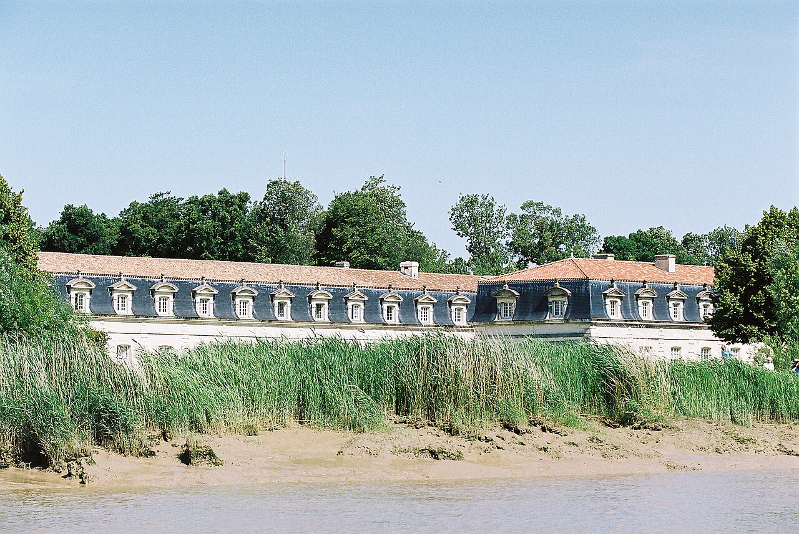

Commencer par l’Arsenal
Rejoignez le secteur de l’Arsenal pour situer l’histoire maritime extraordinaire de Rochefort. Prenez d’abord le temps d’une promenade extérieure : elle aide à mesurer l’échelle impressionnante des bâtiments et leur relation avec la Charente. Choisissez ensuite la visite qui vous inspire le plus.
Entrer dans l’univers du cordage
La Corderie Royale est l’un des joyaux du patrimoine naval français. Son architecture démesurée de plus de 300 mètres de long raconte la fabrication ingénieuse des cordages des vaisseaux du Roi. Consultez le programme et les démonstrations pour choisir un créneau adapté à toute la famille.

Photo : Jebulon · Domaine public
Faire une place à la promenade
Après la visite, accordez-vous une pause ombragée le long des berges de la Charente plutôt que de repartir immédiatement. L'atmosphère est paisible et propice à la contemplation.
Une idée pour les jours moins ensoleillés
Construisez votre journée autour d’une visite intérieure passionnante au musée de la Marine ou à la Corderie, puis flânez entre deux éclaircies. Une veste imperméable légère suffit pour savourer la visite.
Avant de partir
Vérifiez les billets et réservations de chaque lieu. Ce parcours ne suppose pas la présence de L’Hermione à Rochefort : consultez les informations officielles si vous souhaitez connaître son calendrier d'entretien.
Pour préparer votre sortie : Rochefort Océan — Arsenal et Corderie Royale ↗. Vérifiez les horaires et conditions sur le site officiel avant votre visite.